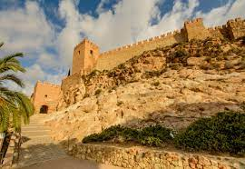

Diferentes recintos donde aprender muchas cosas interesantes!!
Bienvenidos a nuestra página web, en Almería podemos encontrar su famosa Alcazaba

| CARACTERÍSTICAS DE LA ALCAZABA | |||
| Caracteristicas | Fortaleza árabe | ||
| Recintos | Primer recinto | Segundo recinto | Tercer recinto |